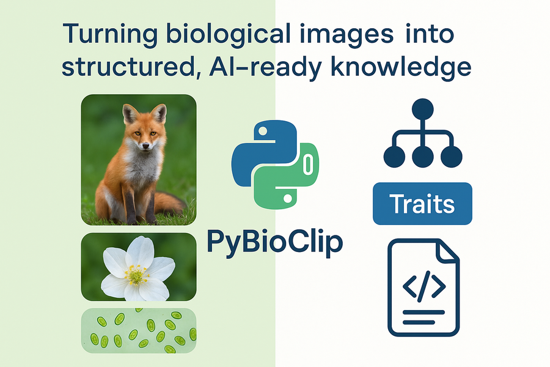

In a step forward for computational biology, the Imageomics Institute has launched PyBioClip, an open-source Python library designed to streamline the use of biological image data for machine learning.
Developed by a team of researchers at the Institute, headquartered at The Ohio State University, PyBioClip empowers scientists to structure, clean, and enrich biological datasets—making them ready for advanced AI applications.
PyBioClip builds on the principles of BioClip, a data model the Institute introduced to capture rich metadata and biological traits alongside images. BioClip emphasizes not just the pixels, but the context—species taxonomy, physical traits, and ecological information—critical for AI systems seeking to understand life’s diversity in a biologically meaningful way.
The release of PyBioClip is pivotal to the Imageomics Institute’s mission of applying machine learning to discover new biological knowledge directly from images. By helping researchers encode images with standardized, machine-readable metadata, PyBioClip ensures AI models can "see" not just the surface, but the life story behind every image.
PyBioClip is about bringing biological insight into machine learning pipelines, an essential step for researchers who want to train AI with a richer understanding of biodiversity.
For those eager to dive in, a detailed PyBioClip video tutorial is available here.
As machine learning grows ever more powerful, tools like PyBioClip are crucial in ensuring AI learns from nature with depth and context.